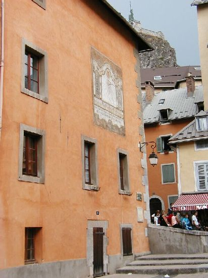
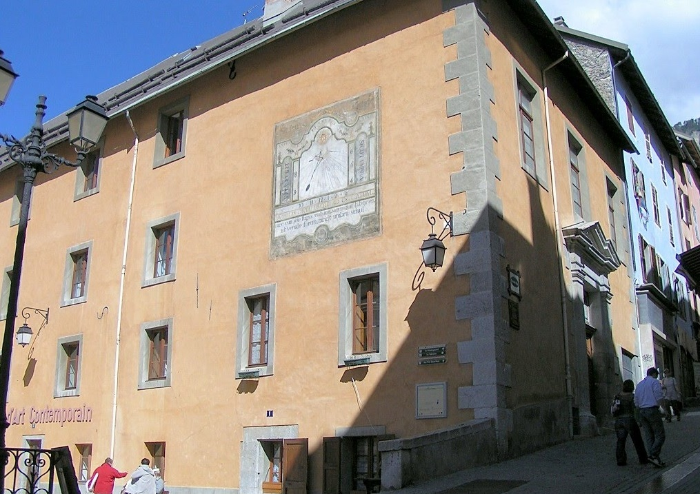
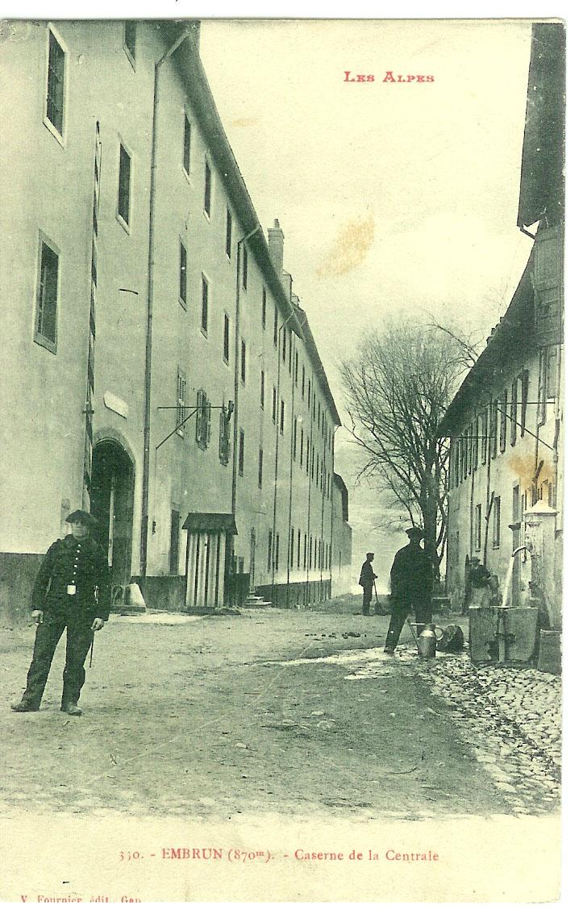
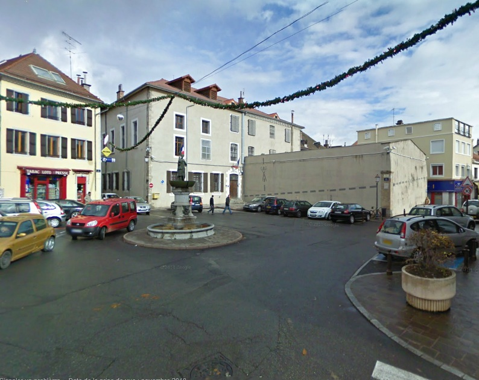
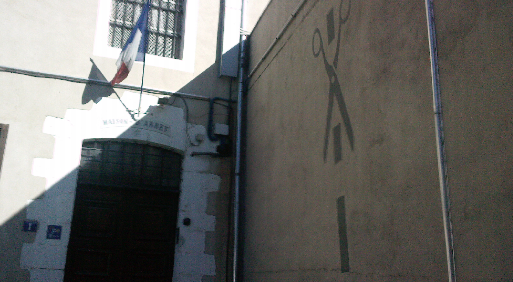

| Département | Images | Ville | Nom | Adresse | Période | Capacité | Histoire du lieu | Nombre d'exécutions |
| Hautes-Alpes (05) |   |
Briançon | Maison d'arrêt | 1, place d'Armes | -1926 | Maison du Roi, siège de la justice - tribunal et prison partageaient les mêmes bâtiments -, accueille une salle d'audience jusqu'en 2009. Devenu désormais les services du patrimoine. | Aucune exécution | |
| Hautes-Alpes (05) | Embrun | Maison d'arrêt | Place Saint-Pierre | 1783-1926 | Devenue la mairie | Aucune exécution | ||
| Hautes-Alpes (05) |  |
Embrun | Maison centrale | Rue Emile Guigues | 1804-1893 | Ancien collège des Jésuites. Entre 750 et 1000 détenus. Après sa fermeture, caserne Vallier Lapeyrouse (Chasseurs alpins). En partie démolie, devenue immeuble d'habitation et salles de réunions. | Aucune exécution | |
| Hautes-Alpes (05) |   |
Gap | Maison d'arrêt, de justice et de correction | 1, place Grenette | En service depuis 1790 | 45 places, 8 surveillants (1962) 37 places (2015) |
A l'origine maison particulière construite en 1723, la maison d'arrêt de Gap a vu le jour sous la Révolution, pour remplacer les prisons royales - rue du colonel Roux, proche de la place des exécutions capitales - et épiscopales - aux abords de la place Saint-Arnoux -. Petit établissement, il comporte onze cellules doubles, trois cellules triples, pour remplacer les anciens dortoirs de neuf détenus. Sa fermeture avait été prévue, mais sa mise aux normes en 2009 après un an de travaux lui a permis de "survivre". | Aucune exécution |
{kind=link}
{kind=link}
{kind=link}
{kind=link}
{kind=link}
{kind=link}